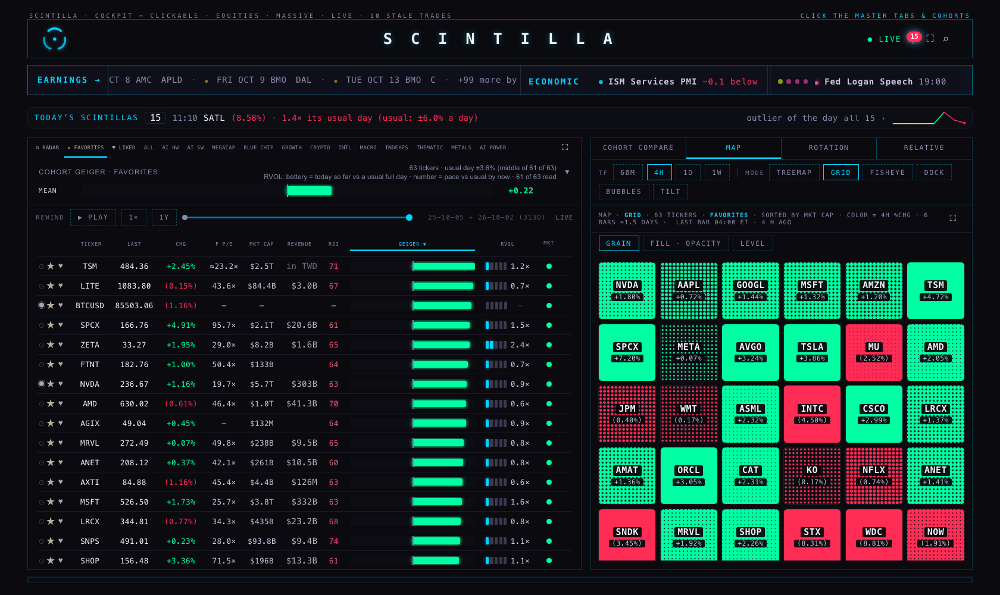

Monday review · 5 Oct
1The freeze this morning FIXED 11:30
From 00:01 to 11:16 ET the Geiger on the Hub was the midnight reading. One name, Berkshire (BRK-B), held all 590: the previous-close robot asked Massive for "BRK-B" (Massive spells it "BRK.B"), got nothing, wrote "no daily bar", and the all-or-nothing publisher refused to publish. Your rule — a little wrong rather than a little old — is now live on the back end: the Geiger publishes every cycle, a failing name keeps its last value with its age, a chart never goes blank when we hold bars. The spelling is fixed at its source too.

2Portfolio allocation, rebuilt PASS 2 RUNNING
What today's page was doing: a 53,000-pixel page averaging Friday's Geiger to −0.11 and landing on "own 40%, cash 60%", then two stock screens that contradict each other, with one P/E against a sector median as its whole "comps". No analyst targets, no sector compare.
The new chain: sector heat (your sector compare + the bow tie) → the sound themes inside the hot sectors → a knockout ring per theme (comps rank 50 · target upside 20 · revisions 10 · Geiger 20; outliers out) → three survivors each. Today: hot ENERGY · TECH · HEALTH; strongest SM, TSM, CRWV, NVDA, AMKR; weakest QS, WELL, PLD, LI, KO.
My verdict: the chain is right; the page reads like our console. Pass 2 (running) puts the weights as an Equalizer of sliders, adds the pie charts by sector and theme, ranks each ring by fundamentals first, strips every code into PAGE SPECS, and fits in four screens. You said you'll bring the way to deploy purchases — nothing of that is built.
Open pass 1 (the chain, today) →The report →3What lives on the Hub — one number YOUR CALL
Recommended live Hub: 462. Everything on your lists stays (142 names). The 364 originals and your 56 bookmark names stay. The 66 Geiger-only funds leave the live Hub (they stay in the tree and the compare strip). Of the 29 Sep batch, 41 stay (lists, a fund's tracking name, or a cohort that needs them) and 63 serve nothing live and move to the close tier, where 62 are comps peers and keep what comps needs. SKHY joins tonight. The publisher's cycle falls from about 4 minutes to about 3.
But first: you're right that the off-Hub tier has to be sound before this is worth discussing — that expansion is running now (part 6). The decision page waits for it.
Open the decision page →4The coil, pass 3 PASS 4 INSIDE THE TREE REBUILD
Labels face you and scale with the zoom (25 px in, 13 at home, 11 out), the glass bodies are gone, and the market-cap sphere works: FAVORITES is a $41T sphere, RADAR $18T, side by side. My verdict: the thin wire outlines around each step are still there — your "column boxes" — and the red half is too faint. Both go into the tree rebuild, where the coil becomes the 3D bow tie you described.
Open the coil in 3D →The report →5Station controls and the X crop TWEAKS RUNNING, THEN LIVE
The crop: the X Bridge in your browser captured the x.com column starting at the post text and stopping 18 px short of its right border, so the avatar rail and the ··· menu were never captured. Fixed at the bridge (0.7.22) — after it goes live you reload the X source tab once (↻ then ⌥⇧S); I'll give you the exact moment. YouTube: being re-ordered to your use — NEXT, GRID, + WATCH LATER and ↻ visible as icons; the channel switch and filters behind one ⋯. X refresh: 60 s default, as "a page up". The two tapes (LIKED minus FAVORITES = 85 names; FAVORITES 63) are proposed at the top of the chart area, 22 px each, taking nothing from the charts' width.
Open the Station report (pictures of the crop and the tapes) →6Off-Hub coverage RUNNING
Measured Saturday: sectors 6 of 11 sound, industries 55 of 121, your cohorts 6 of 18 — on the whole-market close tier. Seven foreign listings make all 11 sectors sound; 34 names cover the thin industries. The lane running now adds every name the close tier needs (it's not the live Hub, so it's applied tonight, with rollbacks), re-measures, and reports sound / thin / not-yet before → after.
Saturday's market bow tie and soundness tables →7The tree, rebuilt to the standard you set RUNNING
Your verdict is recorded: "today" is rejected for every part; the standard is the Hub's own look for every flat part and the laser treatment for every 3D part. The rebuild also fixes why the tree looked thin: at first view only 127 of 613 tickers printed and 81% of the canvas was black, because the boxes were drawn bigger than the space between them.
The parts gallery you judged →8Outside critique of our code and processes RUNNING
Open-source tools (ESLint, Semgrep, knip, dependency-cruiser, type checks, Lighthouse) over the three repos, and our processes judged against how LEAN, zipline, Nautilus and OpenFIGI identify a security. The fix for the Berkshire class of error is part of it: one source of identity for every security that every service must use, with a test that fails the build when any service spells a ticker on its own; a smoke test before and after every deploy.
Saturday's rules audit (the 75 rules) →9Also done today
- Data fills from Saturday applied: 335 READ dossiers (the "no template" text is gone for your bookmark names), 61 funds' holdings, MOG.A fixed, 69 companies' financial statements loaded (69 of 69).
- Four timers moved off the busy quarter-hour minutes; the nightly backup repair split so it runs; job alarms switched on (first push only when a job is late or failing).
- The iMac board fixes, the business "?" and the developer-text clean-up are built and waiting for your word (Saturday's part 8 / H10 report).
- SKHY reaches 60 sessions at today's close; the admission lane self-launches at 20:30 ET with the full-treatment checklist and rolls back on any failure.
Page specs
Sources: G1/G1b provider/g1-geiger-liveness-20261003 @8afc9cd (chart API g1b-8afc9cd; publisher 18 injected files); PA1 hub/pa1-allocation-20261005 @bb35f77; U5b hub/u5b-what-lives-where-20261005 @00c85fe; V3 hub/v2-coil-lab-20261003 @f219335; S12 station/s12-controls-20261005 @697c001; B1 @95f552d; H10 @71eb61e; F1 @b5edfd6. These report pages are copied onto the Hub's review area only; no Hub screen, table or job changed with them.